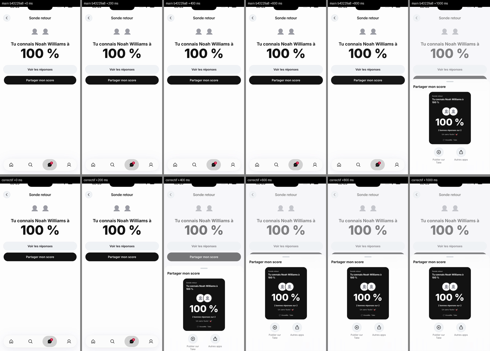
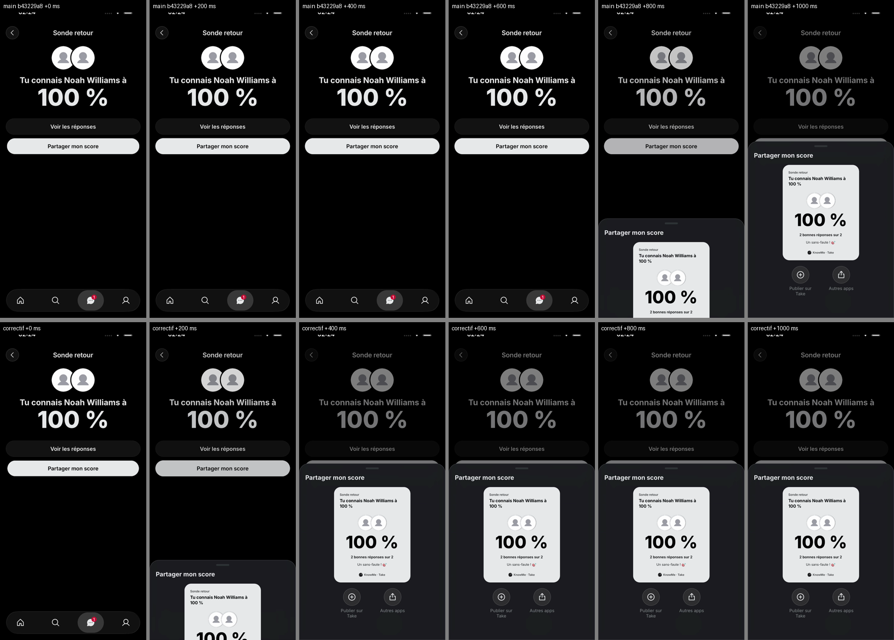

Ce qui n'est pas dans le build 196
16 points. Tu as 6 choix à faire, tout le reste attend sans rien te demander.
-
Feuilles de partage plus rapides
Le correctif de « Tu me connais » (le Retour perdu juste après une feuille de partage) fait aussi apparaître les feuilles de partage environ une demi-seconde plus tôt, « Envoyer à » compris.
Pourquoi pas dedans : C'est un changement de mouvement, donc de design : il attend ton accord. Les deux relectures sont propres. Sans ce changement, iOS avale le Retour pendant le fondu caché, donc le correctif entre en entier ou pas du tout.
Avant/après, image toutes les 200 ms après le toucher sur « Partager mon score ». En haut, main : la feuille arrive vers 1 s. En bas, le correctif : elle arrive vers 0,4 s.


À décider : Valider les feuilles plus rapides : le correctif entre alors dans le 196. Sinon, il attend le build suivant.
-
Touchers plus rapides qu'une image
Deux touchers à moins d'environ 16 ms d'écart sur la même commande (onglets, votes, repost, fantôme) n'en font qu'un.
Pourquoi pas dedans : Trouvé cette nuit par le nouveau banc de rafales. À partir de 33 ms, ce qui est déjà plus rapide qu'un doigt, rien n'est perdu (0 sur 24). La cause est cherchée côté React Native ; la corriger touche à la gestion des touchers, trop risqué juste avant un build.
À décider : Rien, sauf si tu préfères attendre ce correctif avant le build.
-
Pages voisines lues d'avance
Messages et le Profil seraient lus avant qu'on y aille.
Pourquoi pas dedans : Le code est dans le 196 mais éteint : allumé, il alourdit un peu le lancement. Une version qui prépare ces pages morceau par morceau, au repos, a ses deux défauts corrigés ; elle est en relecture.
À décider : Rien. On l'allumera depuis le serveur, sans nouveau build.
-
Vidéos préparées d'avance dans le fil
Le début de chaque vidéo serait prêt avant qu'elle arrive à l'écran.
Pourquoi pas dedans : Tu l'as mis après le 196. Mesurée cette nuit : la première image arrive en 46 ms au lieu de 343, et on télécharge neuf fois moins ; mais le défilement du fil devenait plus lourd. Ce travail a été sorti du fil principal de l'app, il reste à le remesurer.
À décider : Rien.
-
Explorer : pages blanches pendant les changements rapides
La page qu'on quitte resterait dessinée pendant une rafale de changements de page.
Pourquoi pas dedans : Brouillon pour après le 196. Le test qui manquait est en cours ; je ferai les captures sur le Mac pour ton accord.
À décider : Rien pour l'instant.
-
Lancement en mode clair : environ 3 s de noir
En mode clair, l'app montre l'écran de lancement d'iOS, puis le logo sur fond noir, pendant environ 3 secondes avant le fil.
Pourquoi pas dedans : C'est un choix de design qui t'attend depuis TAK-984 : garder le noir, ou passer l'écran de lancement en blanc en mode clair. Vu au tour des 90 points.
À décider : Garder le lancement noir, ou le passer en clair en mode clair.
-
Explorer inspiré de celui de X
Une étude avec six propositions (onglet « Pour toi », lignes de tendances, page d'un sujet…), maquettes à l'appui.
Pourquoi pas dedans : Rien n'est codé tant que tu n'as pas choisi.
À décider : Choisir parmi les six propositions.
-
Hashtags sur le site web
Sur le site aussi, les hashtags deviennent des liens gris dans le titre, sans pastille.
Pourquoi pas dedans : C'est le site, pour après le 196. Les captures ont trouvé deux trous, corrigés, et un petit saut sur les profils publics, dont la correction doit encore être poussée.
À décider : Rien pour l'instant ; ton accord viendra avec les captures.
-
Textes au plus grand
Chaque écran lisible jusqu'à la plus grande taille de texte d'iOS.
Pourquoi pas dedans : Tu as dit : « les grands textes on verra après ».
À décider : Rien.
-
Chanson sur le profil
Un extrait de musique sur son profil.
Pourquoi pas dedans : C'est le travail de Jordan, c'est lui qui valide.
À décider : Rien.
-
Message qui partage un Take illisible
Ce message n'arriverait plus en direct à quelqu'un qui ne peut pas lire ce Take.
Pourquoi pas dedans : Repéré en relecture, pas encore confirmé.
À décider : Dire si c'est voulu ou s'il faut le corriger.
-
Vidéos des Takes officiels retirées
Une erreur passagère du site vidéo retirerait la vidéo du Take pour toujours.
Pourquoi pas dedans : Repéré en relecture, pas encore confirmé.
À décider : Dire si c'est voulu ou s'il faut le corriger.
-
Limite pour bloquer et débloquer
Au plus 10 par minute et 100 par jour, et l'app réessaie jusqu'à 10 fois.
Pourquoi pas dedans : Repéré en relecture, pas encore confirmé.
À décider : Dire si cette limite te convient.
-
Passerelle IA de staging sans crédit
Sur staging, la modération, la traduction et le curateur passent par la passerelle IA de Cloudflare, à court de crédit.
Pourquoi pas dedans : Tu as dit qu'on la rechargerait après. Les commentaires et réponses des testeurs peuvent rester en attente de modération d'ici là.
À décider : Rien.
-
Profil du build 195 sur staging
Le build 195 ne charge plus son profil sur staging, parce que l'API envoie un nouveau champ de confidentialité qu'il refuse.
Pourquoi pas dedans : Le 196 le connaît ; seul le vieux build est touché.
À décider : Rien avant la production.
-
Garde-fou contre les ralentissements
Un contrôle qui refuse tout changement de fluidité sans son étude de régression.
Pourquoi pas dedans : Outil pour les développeurs, prévu juste après le 196.
À décider : Rien.